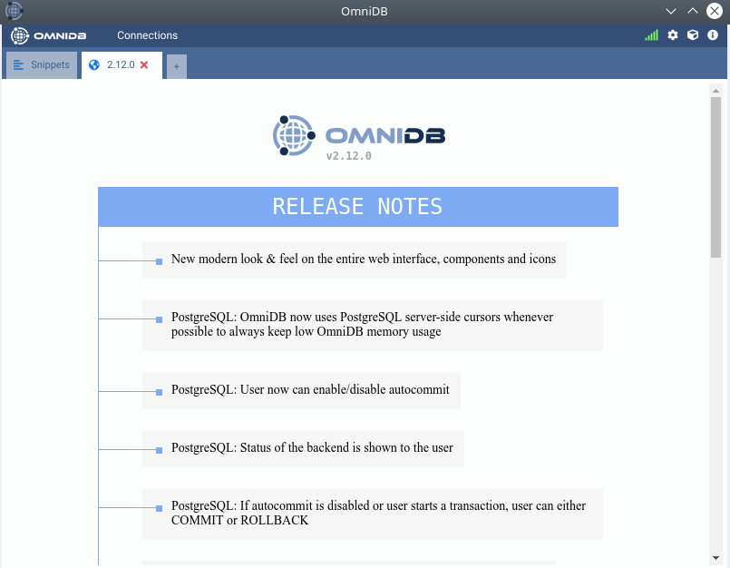

2. Installation
OmniDB provides 2 kinds of packages to fit every user needs:
- OmniDB Application: Runs a web server on a random port behind, and provides a simplified web browser window to use OmniDB interface without any additional setup. Just feels like a desktop application.
- OmniDB Server: Runs a web server on a random port, or a port specified by the user. User needs to connect to it through a web browser. Provides user management, ideal to be hosted on a server on users' networks.
Both application and server can be installed on the same machine.
OmniDB Application
Important: The original repository https://github.com/OmniDB/OmniDB/releases contains only old versions (up to ~2020) and is no longer maintained.
For current versions (3.1.x and newer) use the revived project at https://github.com/heptau/omnidb/releases.
In order to run OmniDB app, you don't need to install any additional piece of software. Just head to the releases page and download the latest package for your specific operating system and architecture:
- MacOS
- ZIP archive for Apple Silicon or Intel x86 (recommended)
- DMG installer (older versions only)
- Linux 64 bits
- DEB installer (older versions only)
- RPM installer (older versions only)
- Windows 64 bits
- EXE installer (older versions only)
Installation via Homebrew (macOS only – recommended)
For macOS users who prefer using a package manager, OmniDB is available through a custom Homebrew tap:
# Install the latest version:
brew install --cask heptau/tap/omnidb# To upgrade later:
brew upgrade heptau/tap/omnidbHomebrew will automatically download the correct ZIP for your architecture (Apple Silicon or Intel), unzip it and place OmniDB.app into your Applications folder.
The cask definition is maintained here: heptau/homebrew-tap – omnidb.rb
Direct download of the latest version (macOS)
Download the ZIP for your architecture directly from the latest release:
- Apple Silicon (arm64): OmniDB-macOS-osx-arm64.zip
- Intel (x64): OmniDB-macOS-osx-x64.zip
These links always point to the most recent release assets. For all platforms, older releases or release notes visit the full releases page.
Use the specific installer for your Operational System and it will be available
through your desktop environment application menu or via command line with
omnidb-app.

OmniDB Server
Like OmniDB app, OmniDB server doesn't require any additional piece of software and the same options for operating system and architecture are provided.
Use the specific installer for your Operational System and it will be available
through command line with omnidb-server (the same binary as the app, run
without -A):
user@machine:~$ omnidb-server
omnidb-go-server: listening on 127.0.0.1:52149 — open http://127.0.0.1:52149/omnidb_login/ in your browser
By default OmniDB listens on 127.0.0.1 only and picks a free port
automatically. You can specify both explicitly:
user@machine:~$ omnidb-server -p 8080 -H 0.0.0.0
omnidb-go-server: listening on 0.0.0.0:8080 — open http://0.0.0.0:8080/omnidb_login/ in your browser
See Chapter 19 for the full set of options
and recommended deployment setups (in particular, why exposing -H 0.0.0.0
directly to the internet without a reverse proxy in front is discouraged — there's
no built-in TLS support).
OmniDB with Oracle
Neither OmniDB app nor server require any additional software to connect to Oracle — unlike previous releases, no separate Oracle Instant Client installation is needed. Oracle connectivity is implemented natively (a pure Go driver), so it works the same way out of the box as every other supported database.
OmniDB User Database
Upon first run, both server and app create a file
~/.omnidb/omnidb-app/omnidb.db (for OmniDB app) or
~/.omnidb/omnidb-server/omnidb.db (for OmniDB server) in the user home
directory, if it does not exist yet — along with a default admin/admin
superuser account, ready to sign in with immediately. This file is also called the
user database and contains all users, connections, and other application
data. If it already exists (e.g. after an upgrade), OmniDB uses it as-is — it is
never overwritten or reset automatically.
OmniDB in the browser
Now that the web server is running, you may access OmniDB browser-based app on
your favorite browser. Type in address bar: localhost:8000 and hit Enter. If
everything went fine, you shall see a page like this:

Now you know that OmniDB is running correctly. In the next chapters, we will see how to login for the first time, how to create an user and to utilize OmniDB.